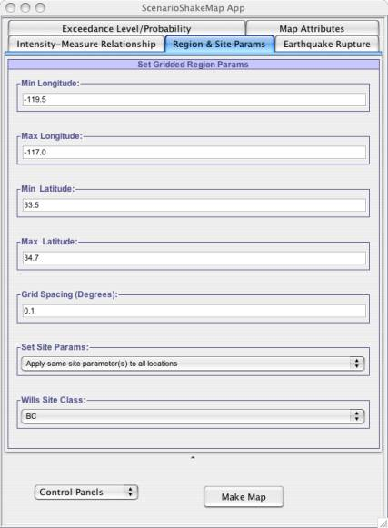
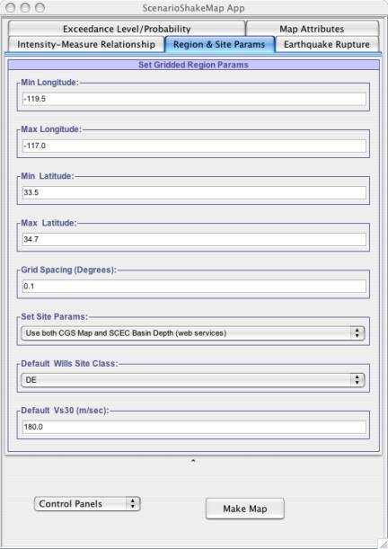

This panel gets visible if user clicks on the Regions and Site Params tab on the top of the application. This panel allows user to enter the latitudes and longitudes for the region of interest. Based on the chosen attenuation relationship model(s) this panel shows all the site parameters for selected attenuation relationship model as shown in Fig - 1 and 2. As you can see from figures, apart from allowing user to fill in the latitudes, longitudes and grid-spacing for the region, it also allows user in applying site conditions to the region. User has following options when setting the site conditions for the region:
1. Apply all sites in the region with same site type.
2. Apply site effects to all locations in the region using the Wills Site Class.
3. Apply site effects to all locations in the region using the Wills Site Class and SCEC Basin Depth.
When user chooses to get the site effects using the Will Site Class Values and/or SCEC Basin Depth, then each site within the region get translated to Site Effect Parameter for selected AttenuationRelationship(s). Within this application scope Wills Site Class value are only defined for California Region and Basin Depth values for Southern California region. So if user gives region where sites are outside the bound of California or in water or for any reason our application is not able to apply site effects to location(s) within this region then it apply default value for Site parameter for the selected AttenuationRelationship(s) model, as shown in Fig-2.
|  |
| Fig - 1: Allows user to set the latitudes and longitude (in degrees) for the region. It also allows user to specify if similar site parameters are to be applied to all locations in the region or each location will be having its own site parameters. |
|  |
| Fig - 2: This figures shows Multiple Site Parameters corresponding to selected Attenuation Relationships (in this case ShakeMap (2003) and USGS Combined (2004)). In figure , it chooses to set the site effects for each location in the region using the Wills CGS map and SCEC basin Depth. If application is not able to get the site effect for location(s) then it apply default value to the Site parameter, which in this case is DE for ShakeMap (2003) and 180 for USGS Combined(2004). |